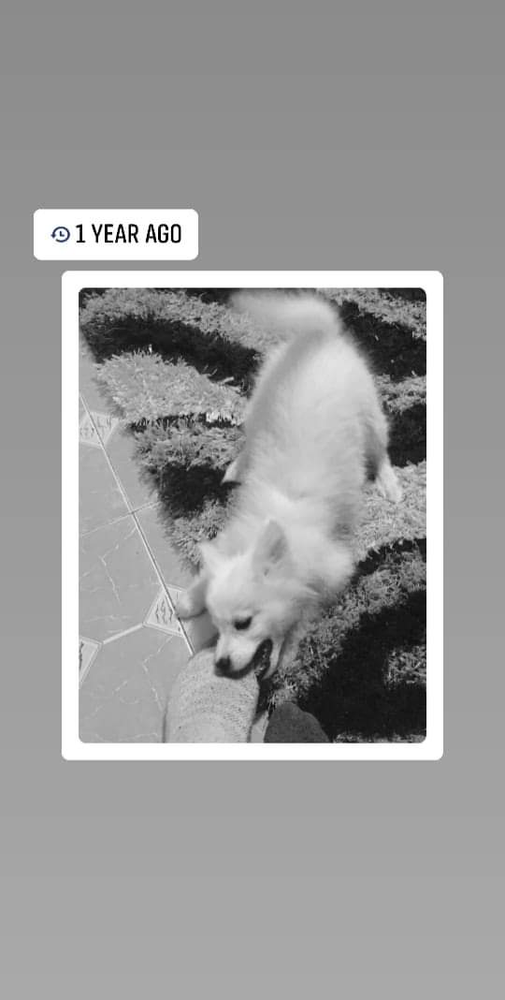

My pet'is a male dog, with a name as Major, and in short, "MJ". He was born on May 2018 in Kitengela and was brought up in the same surrounding. His name, "Major" reflects the nature of the change that his coming into my life brought: A Major change!
Here is MJ's photo from last year!: 
Among his favorite activities include the following:
He is forever a friend, and would never imagine my life without him. He makes most of my days and I hope I do make his days too in return!